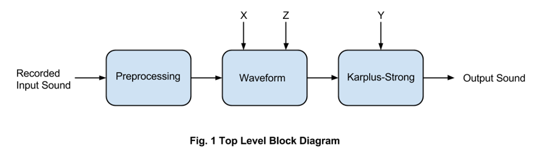
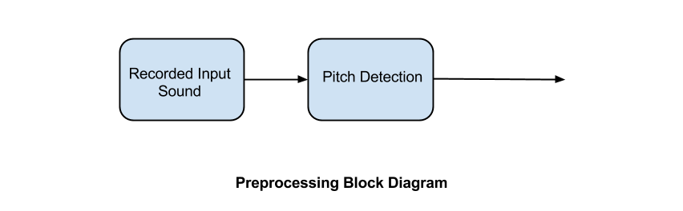
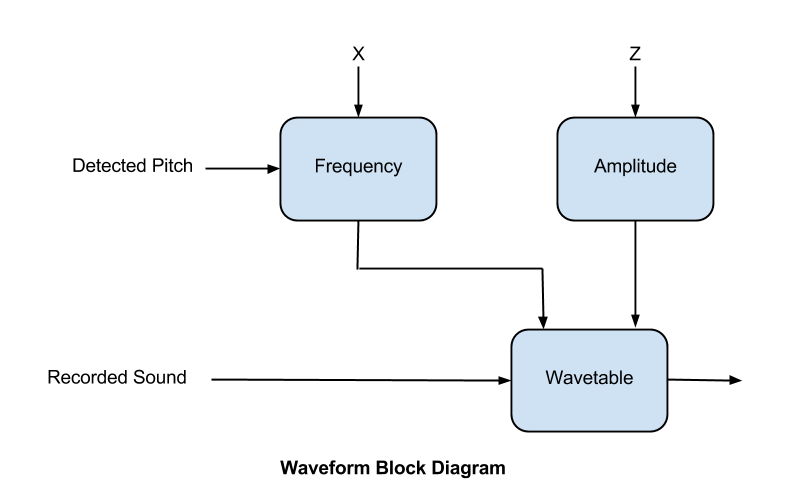
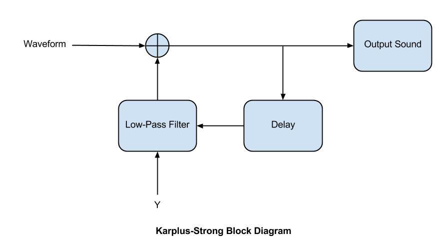
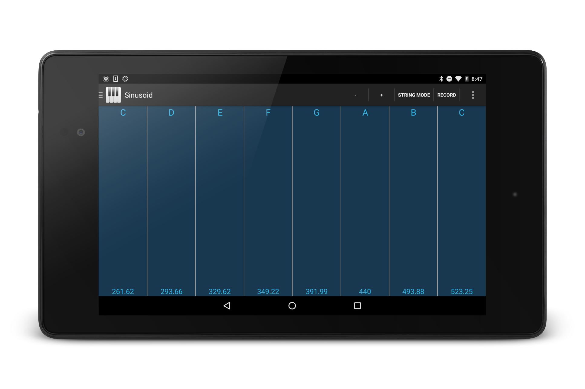
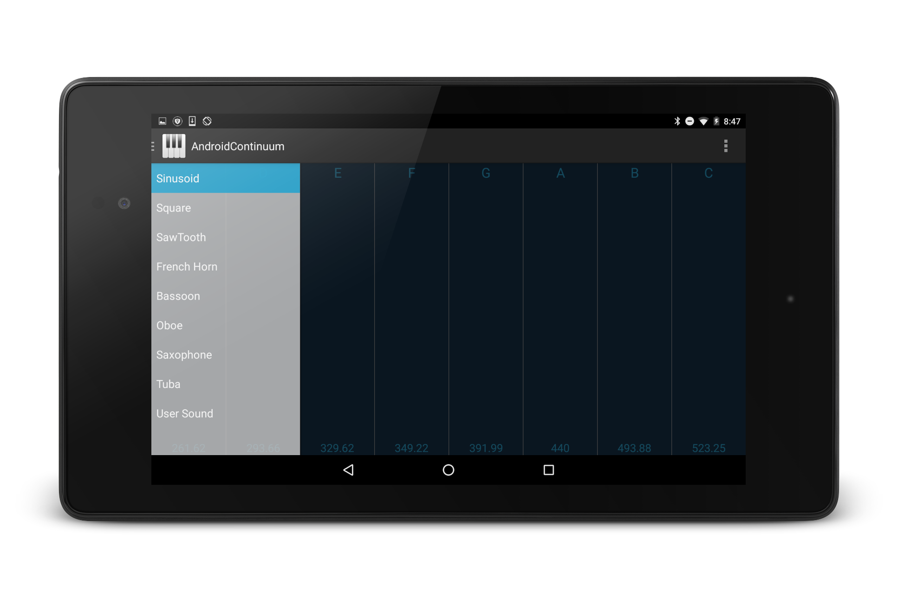

Android Continuum
Introduction
In this project we plan on implementing an Android synthesizer. Using this app will allow for manipulation of a variety of basic waveforms. [1] The user will utilize all three axes, similar to Professor Lippold Haken’s Fingerboard Continuum. While not as complex as the Continuum, we hope to implement signal processing ideas to design a small scale continuous synthesizer.
The core of the project revolves around wavetable synthesis. The wavetable contains various waveforms. There are three different sounds that the Android synthesizer has implemented: sine wave, square wave, sawtooth wave. The synthesizer also uses sample-based synthesis to generate sound based on pre-recorded sound samples. The user also has the option to record a sound and added it to the table of waveforms. Various characteristics of the waveforms can be altered in real-time. A tablet allows the user to use all three axes to control different characteristics of the output sound. The x-axis controls the frequency of the sound. The y-axis control the strength of the Karplus-Strong algorithm that is applied to the sound. [2] Karplus-Strong synthesis utilizes delay and filtering to create a reverberation effect. The z-axis modifies the overall amplitude of the sound. All the waveforms and samples are affected by all three axes.
Research
The article [2] by Karplus and Strong goes into detail about their algorithm for synthesizing musical instruments. The basic method is wavetable synthesis. The main principle in wavetable synthesis is that there is a bank of waveforms, which can be repeated to create a sustained note. This method is dull because it produces purely periodic tones. There is no flavor to the sound, such as timbre which all real instruments posses. In the Karplus-Strong synthesis, the wavetable becomes a delay line. The simplest modification is to average successive samples. This effectively produces a decay in the sound. In this manner, when a sound contains high frequencies, these are averaged out first. This method acts as a filter, slowly reducing high frequencies first and leaving low frequencies for last. Another modification that can be made is to introduce randomness in the delay line. Randomness aids in simulating different instances of the same note on the same instrument. In reality, no note played twice sounds the same even on the same instrument. This factor is applied to digital sound synthesis with randomness. The introduction of randomness also can add effects such as a glissando, tie, or slur. While the Karplus-Strong algorithm can be applied to reproduce string instruments quite well, it can also synthesize drum timbres. This is accomplished by changing the probability that values in the delay line are modified. The details and math are documented in article [2]. One of the final methods Karplus and Strong discuss is decay stretching for higher frequencies. Since high pitches have shorter periods, they do not fill up the delay line. This problem is solved by implementing a stretch factor. They offer tips for implementing their algorithm by using a decreasing-counter or a circular buffer.
We used the Lent algorithm discussed in his paper [3] to implement pitch shifting. The Lent algorithm can be broken up into three sections: pitch tracker, compressor/expander, and pitch shifter. The pitch tracker can be crude and inaccurate. It only needs to calculate a rough estimate of the fundamental pitch. In his paper, Lent uses zero crossing after filtering out the high frequencies. The compressor/expander compensates for the timing differences when the pitch shifting is applied. Lent discusses how the simplest method for pitch shifting is resampling at higher or lower rates to change the frequency. He offers a better solution. Still using one period of the sample, window the sound. This way the ends of the samples are zero. The key in the Lent algorithm is changing the period of the sample. To achieve a lower sound, the period needs to increase. This is accomplished by zero-padding the end of the original sample. For higher pitches, the period is shortened by overlapping and adding the sound together.
Description

The preprocessing block contains the procedure for the user generated sample-based synthesis. As seen in Figure 2, after the tablet receives audio input from the microphone, the sample is analyzed to identify the fundamental frequency. This is essential for placing the sample correctly on the interface of the synthesizer. Originally we intended to use harmonic-product spectrum, but this proved difficult since not all sounds have the same number of harmonics. Instead, we chose to use zero-crossing to identify the period and thus the frequency. While this method is not entirely reliable, it is sufficient for placing the sample.

The waveform module in Figure 3 contains the necessary components for wavetable synthesis. It receives the X and Z axes data from the screen to control the frequency and amplitude, respectively. After the frequency and amplitude have been specified, they are fed into the wavetable. The wavetable houses the different waveforms. [3] We implemented the Lent algorithm for pitch shifting the waveforms. In the Lent algorithm, pitch shifting is achieved by varying the period of the sound, thus altering the pitch. Lowering the pitch is achieved by increasing the period through zero-padding. Higher pitches require a shorter period. In this case, waveforms are overlapped and added to preserve the original sound and still shift the pitch. The waveform module also receives the recorded sound and corresponding pitch and stores it in the wavetable.
[3] According to the Lent Algorithm, the ratio between the fundamental frequency and the target frequency is used to determine the change in period.

Karplus-Strong is the final element of the project. It is controlled by the Y axis, and applies the Karplus-Strong effect to the sound if is toggled on. The equation for Karplus-Strong is shown below, where coefficient a is determined by the Y axis and filters the output sound.
The value of coefficient a increases at the bottom of the screen, effectively creating a longer sustain. As the user slides up the Y axis, the filtering strengthens and reduces the sustain effect.

Results
The primary method for testing the effectiveness and correctness of our code was that of auditory comparison to reference material. For the case of sample based synthesis, reference waveforms of sin, square, and sawtooth are played to which the tablet implementation is compared. There were not any problems of note relating to creating the wave table synthesis.
For testing the sample based synthesis, analogous algorithms were constructed in MATLAB, which enables the use of visual debugging via printing the waveforms as they are generated. Once the MATLAB implementation worked correctly, it was then used as a reference sound for the Android implementation. This was also the method used for testing the user input sample based synthesis. While testing there were of course a myriad of bugs and troubles most of which were specific to the Android platform and Java and not implementing the signal processing examples.
In Figure 5 below, the graphical user interface (GUI) of the synthesizer is shown. The screen is separated with white lines to differentiate notes. The letter on the top and number of the bottom corresponds to the note name and frequency located in the center of the section. The scale from left to right is not linear to account for whole and half steps between notes. For example, in order to keep the sections the same size, the scale between the notes E and F (half step) need to be different than the one between notes C and D (whole step). In the top right corner are a few options. The – and + give the user control of the octave they wish to play in. The option for ‘Toggle Play’ turns the synthesizer on and off. ‘String Mode’ applies Karplus-Strong. ‘Record’ records a short sound sample to be used for the user generated sample-based synthesis.

Fig. 5 Continuum GUI
Figure 6 shows the menu of the GUI. This menu is essentially the wavetable. The user has the option to choose which waveform they wish to use.
 Fig. 6 Continuum GUI with menu open
Future Work
A number of features of the Android Continuum could be improved in future developments. The quality of the prerecorded samples could improve. Currently they vaguely resemble the actual instruments, but using higher quality waveforms will help with the synthesis. Another improvement would be with the speed of the touch events. Touch events are not triggered often enough, which prevents the synthesizer to be truly continuous. At slow speeds, the synthesizer appears to shift pitch continuously. If the user moves too fast, the pitch will skip and become discontinuous. Lastly, additional features and effects can be added to the synthesizer. There is almost no limit to the number of features that can be added. A future developer can add more instruments as prerecorded sounds. Additional effects can be added as well, such as distortion or a harmonizer.
Software
We used an Android tablet, Google Nexus 7, to implement the synthesizer. The screen provides position and pressure for multiple finger touches. The Nexus 7 has a sampling rate of 48 kHz and a microphone for audio input. The current design has the capabilities of 10 distinct touches. It is recommended to limit touch events to 4 or 5 because quality decreases significantly with increased touch events.
There are four main files which make up the core of the project. Three of these are classes which perform the different syntheses and the last is the main application function. All of the coding was done in Java for the Android platform. The target operating system is Kitkat (4.4.1) although it has limited support on versions as low as Ice Cream Sandwich (4.0) where multi-touch doesn’t work. The development IDE used is Android Studio, and most XML for the UI was generated through the available GUI builder.
The main file of the four is called MainActivity.java and contains mostly control software to make the application work in addition to implementation of Karplus-Strong string synthesis. The three main parts of the file are the touch event handlers, output thread, and worker thread. The touch event handlers are what is called when the system registers a touch event on the activity. This is the area where positions and pressures are updated in addition to a few triggers for the Karplus-Strong mode. Once a touch event has happened, the computation of the output sound is done in the worker thread. The purpose of the worker thread is to create the next frame of output data while the current frame is being pushed to the output buffer. The worker thread is where the different synthesis classes are constructed and executed. The output threads’ only task is to grab data when it is available and writes it to the output audio device. The reason that the output and worker threads are separate is because writing the data to the output is a blocking task. The same operations could, also be implemented using the AsyncTask class in Android.
The other three files of interest are the synthesis classes. The first is the wave table synthesis file which is a class called WaveSynth.java. It has three modes which return appropriately sized buffers of sin, sawtooth, or square wave. The second, which is a class called SampleSynth.java, is the class for using sample based synthesis. It currently has five pre-programmed instruments which need to be declared upon construction. The last is the user input sample based synthesis class which is called userSynth.java. The user synth is essentially the same as the sample synth except that It gets its samples from recording microphone input.
For more information about the specific methods and operation of the files and classes mentioned above, the source for these files is available in the appendices at the end of the report.
Citations
[1] L. Haken, “Haken Audio Continuum Fingerboard,” [Online]. Available: http://www.hakenaudio.com/Continuum/ [Accessed: 11 March 2014].
[2] K. Karplus and A. Strong, “Digital Synthesis of Plucked-String and Drum Timbres,” Computer Music Journal, vol. 7, no. 2, Summer 1983, pp 43-55. [Online]. Available: JSTOR, http://www.jstor.org/stable/3680062 [Accessed: 11 March 2014].
[3] K. Lent, “An Efficient Method for Pitch Shifting Digitally Sampled Sounds,” Computer Music Journal, vol. 13, no. 4, Winter 1989, pp. 65-71. [Online]. Available: JSTOR, http://www.jstor.org/stable/3679554 [Accessed: 13 April 2014].
[4] Patricio de la Cuadra, PITCH DETECTION METHODS REVIEW, [Online]. Available: https://ccrma.stanford.edu/~pdelac/154/m154paper.htm [Accessed: 11 March 2014].